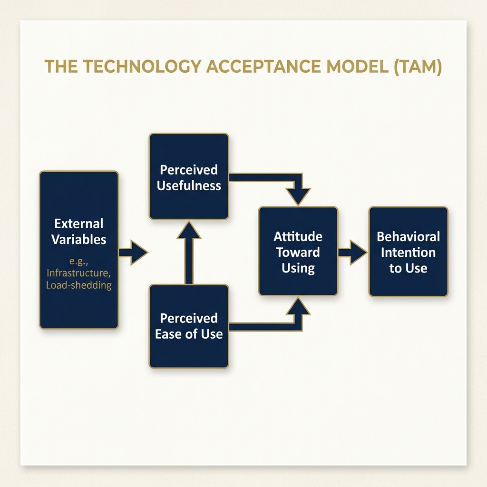
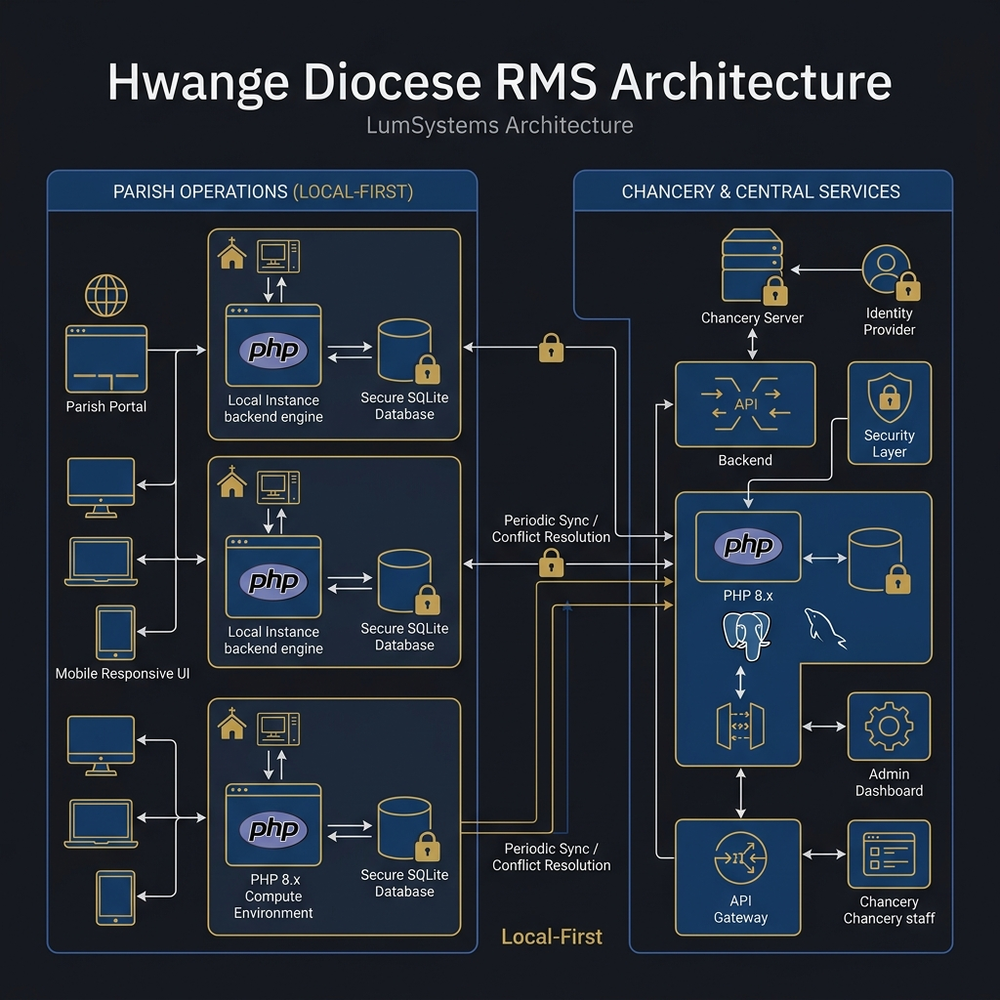
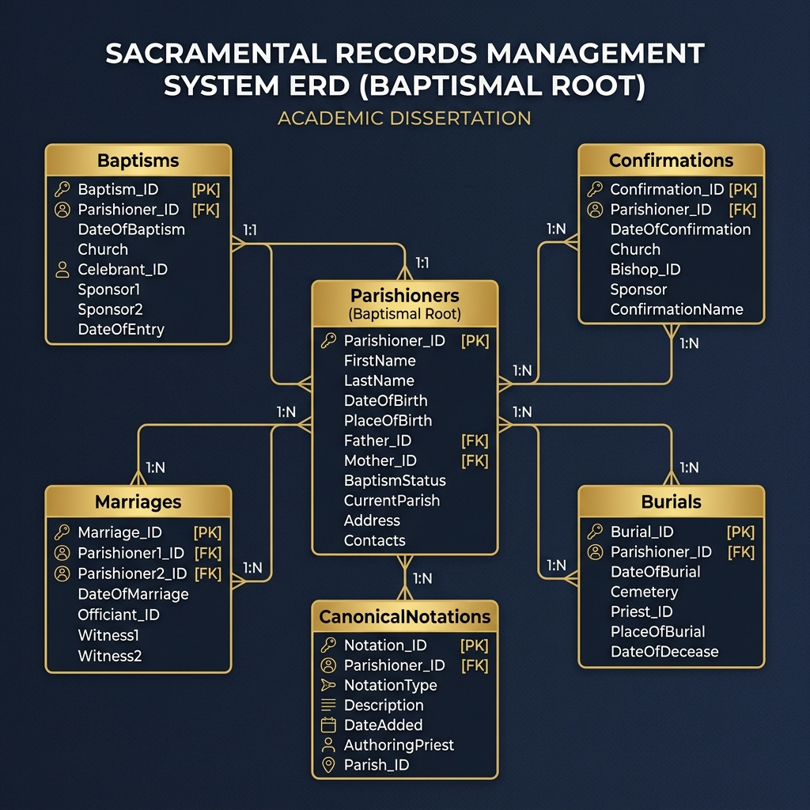
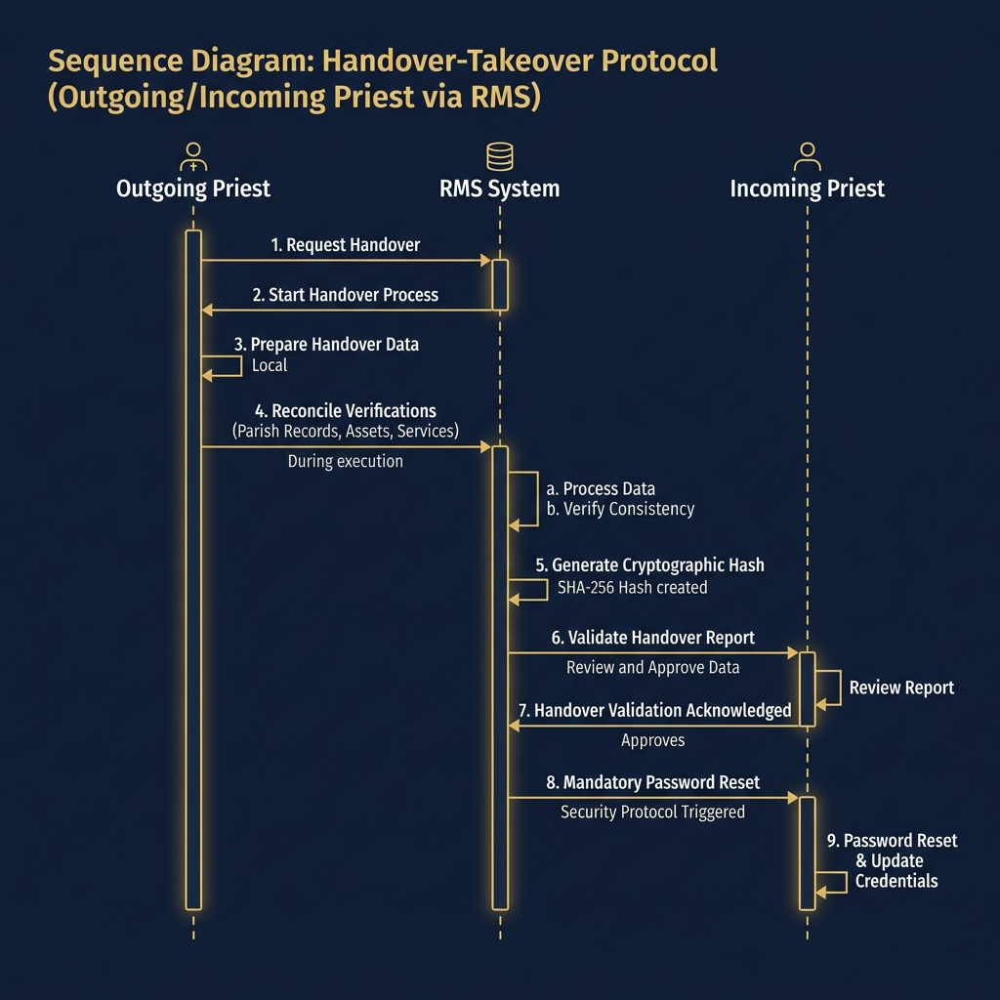
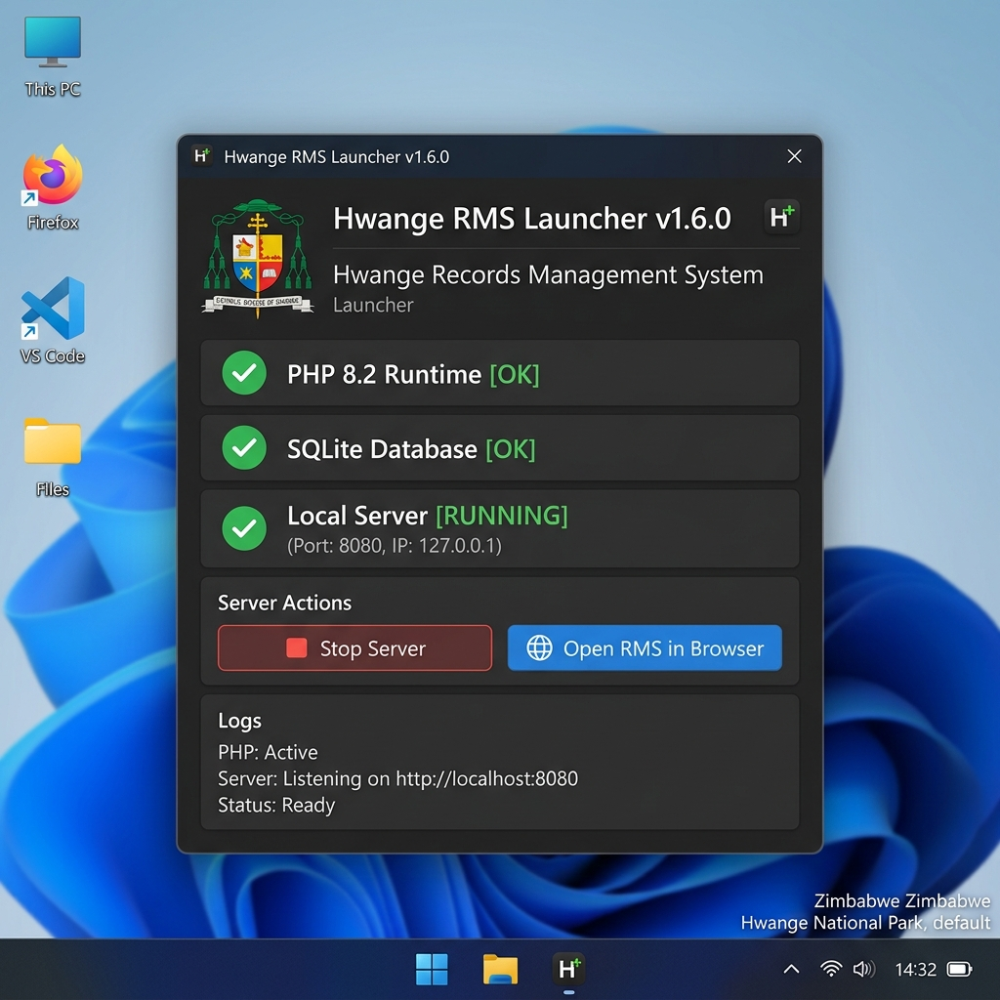
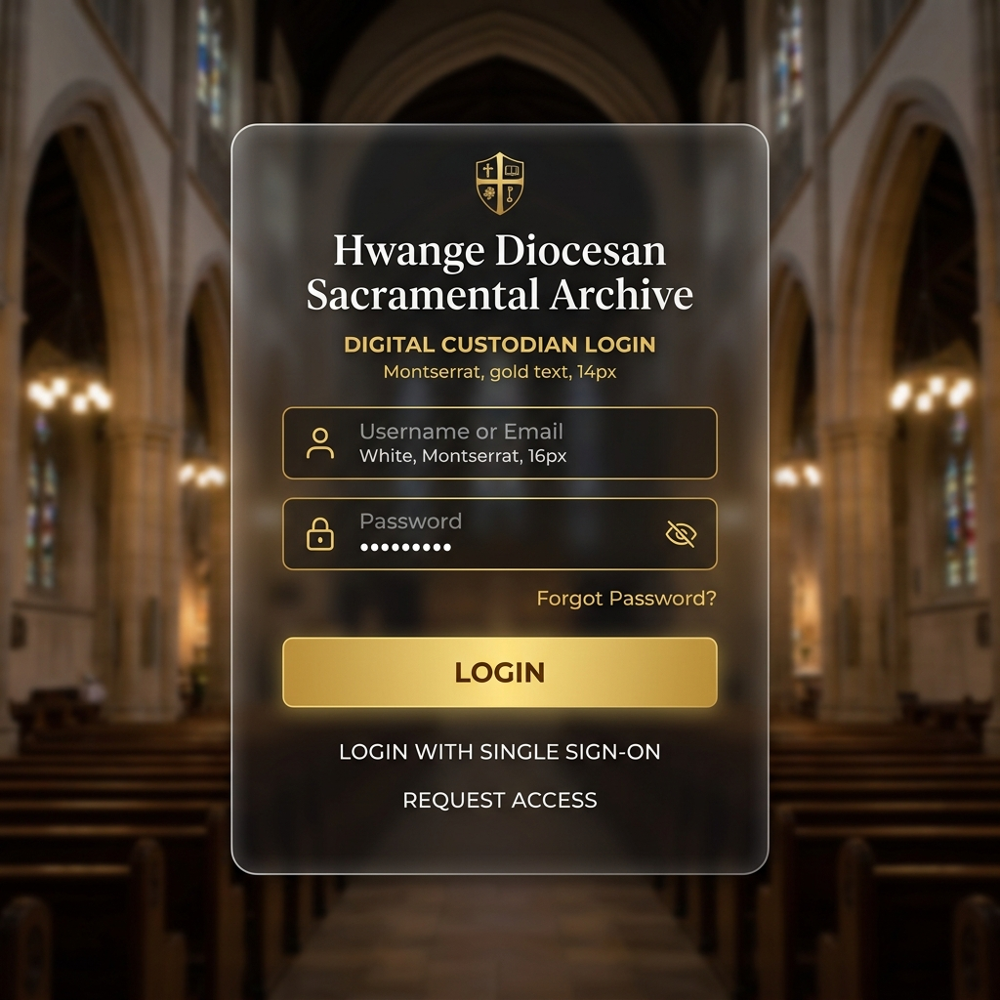
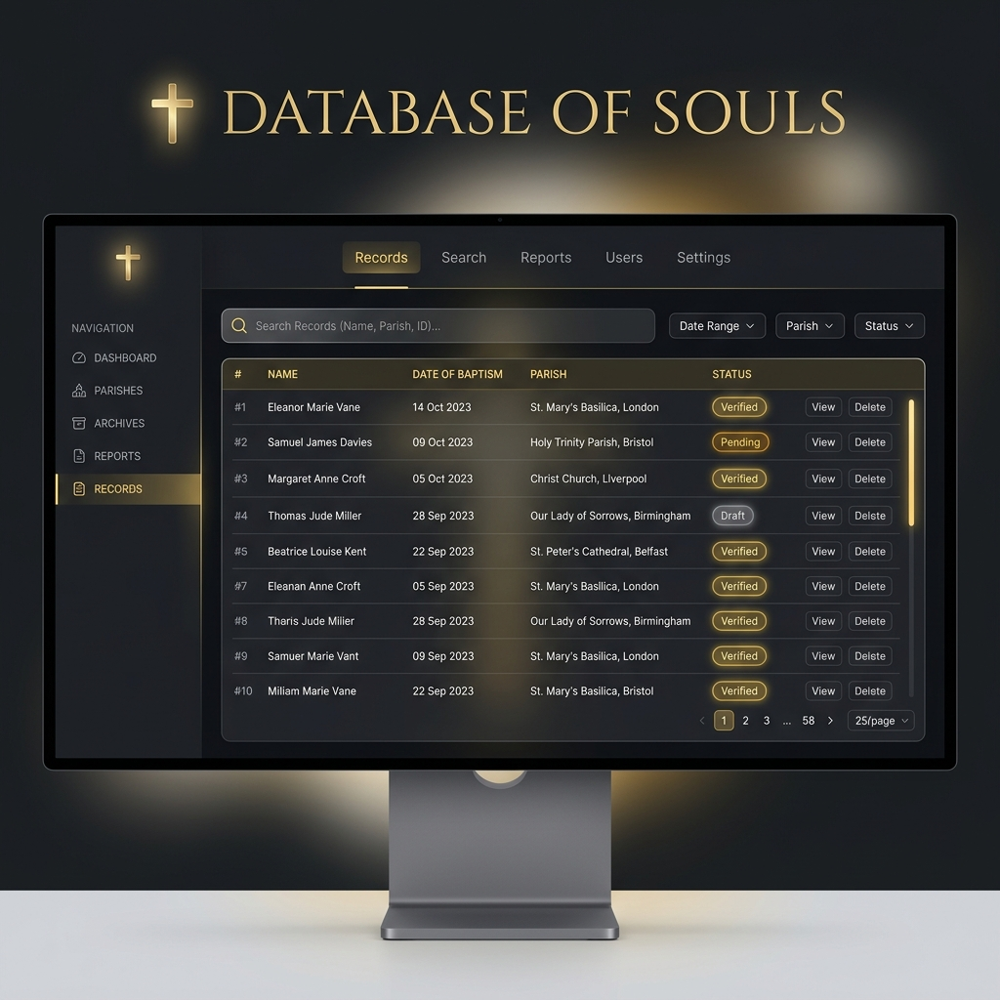
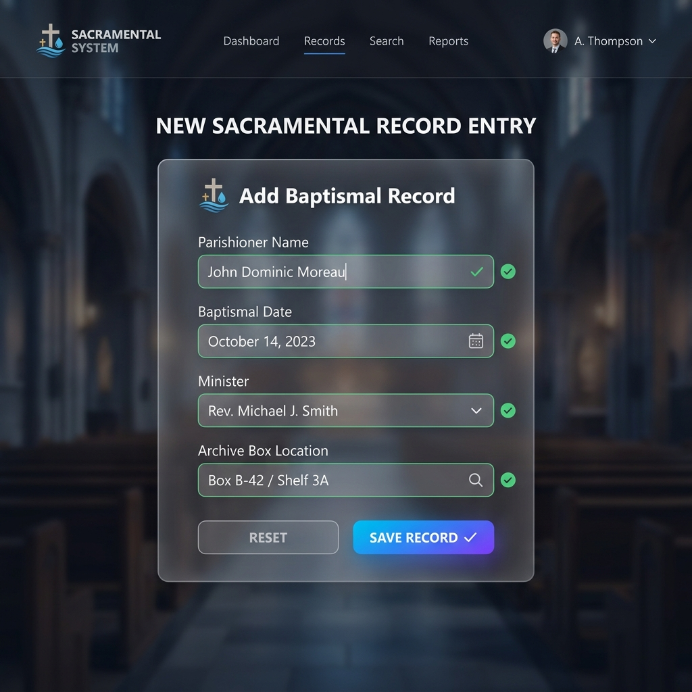
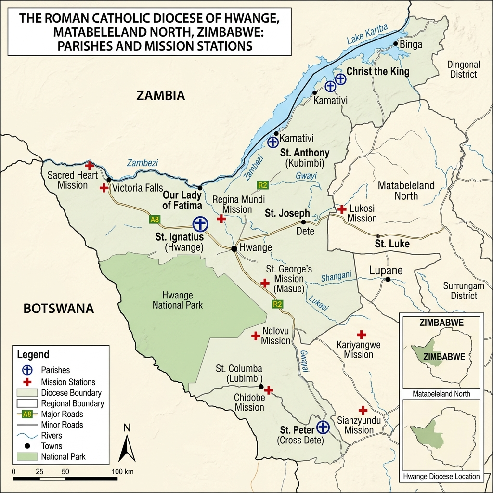
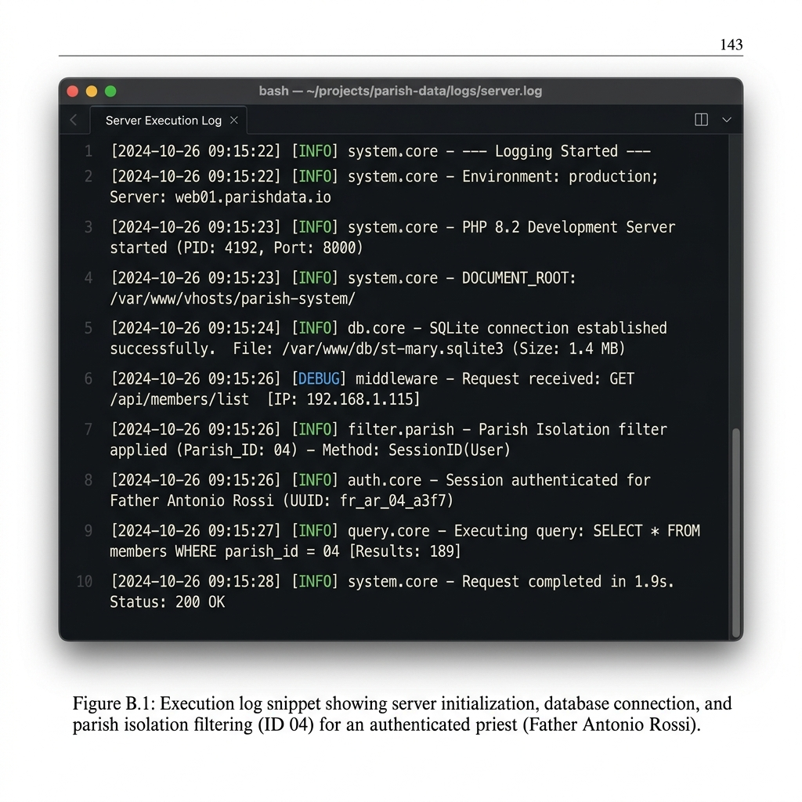

A Dissertation Submitted in Partial Fulfillment of the Requirements for the Degree of Bachelor of Science in Information Technology
Department of Information Technology
May 2026
Declaration
I, VINCENT [SURNAME], do hereby declare that this dissertation is my own original work and has not been submitted before to any other university or institution for any degree or examination.
Candidate Signature
Date
Dedication
Dedicated to the Parish Priests and Secretaries of the Hwange Diocese,
whose tireless dedication to the People of God inspired this digital mission.
Ad Majorem Dei Gloriam.
Acknowledgements
I wish to express my profound gratitude to my supervisor for their academic guidance throughout this project. Special thanks to the Chancery of the Hwange Diocese for providing access to the archival requirements and for their feedback on the system's development.
Finally, I thank my family and colleagues for their unwavering support during this academic journey.
Table of Contents
- Declaration ii
- Dedication iii
- Acknowledgements iv
- List of Figures v
- List of Tables vi
- Glossary of Terms vii
- Acronyms & Abbreviations viii
- Abstract ix
- Chapter 1: Introduction 1
- 1.1 Introduction 1
- 1.2 Background of the Study 1
- 1.3 Statement of the Problem 2
- 1.4 Aim and Objectives 3
- Chapter 2: Literature Review 5
- Chapter 3: Methodology 12
- Chapter 4: System Analysis & Design 18
- Chapter 5: Implementation & Testing 28
- Chapter 6: Conclusion & Recommendations 38
- Bibliography 42
- Appendices 44
- Appendix A: Geographical Maps 44
- Appendix B: Interview Guide 45
- Appendix C: Core Database Schema 46
- Appendix D: Middleware Logic 48
- Appendix E: Launch Automation 49
- Appendix F: Physical Evidence 50
- Appendix G: Research Permission 52
List of Figures
- Figure 1.1: Technology Acceptance Model (TAM) applied to the Hwange RMS 4
- Figure 3.1: Agile Iterative Development Cycle 13
- Figure 4.1: Manual Baptismal Register (1967) showing handwritten entries 19
- Figure 4.2: Manual Confirmation Register (1985) from St. Ignatius Cathedral 20
- Figure 4.3: Portable MVC Architecture Diagram 22
- Figure 4.4: Core Sacramental Entity Relationship Diagram (ERD) 25
- Figure 4.5: Cryptographic Handover Protocol Sequence Diagram 28
- Figure 5.1: The Zero-Install Portable Launcher and Environment Verification 31
- Figure 5.2: Branded Sacramental Archive Login Interface 32
- Figure 5.3: Main Diocesan Dashboard with Statistical Heatmapping 33
- Figure 5.4: The Digital Baptismal Registry (Searchable List View) 34
- Figure 5.5: Sacramental Entry Form with Canonical Location Mapping 35
- Figure 5.6: The Generated Heirloom Edition Baptismal Certificate 36
- Figure 5.7: The Annua Statistica OMEGA Automated Statistical Report (PDF) 37
- Figure 5.8: Age-Segregated Canonical Growth Trajectory (Demographics) 38
- Figure 5.9: The Prenuptial Investigation (PNI) Digital Statement 39
- Figure D.1: Real-Time PHP 8.2 Server Execution Logs (Session Management) 49
List of Tables
- Table 4.1: Database Entity Relationships 24
- Table 4.2: User Role Permissions (RBAC) 26
- Table 5.1: Comparative Search Efficiency (Manual vs. Digital) 36
Glossary of Terms
- Canonical Continuity
- The unbroken, linked chain of a parishioner's spiritual milestones (e.g., Baptism automatically linked to Marriage) across different parishes and decades.
- Database of Souls
- A theological framing of the SRMS, emphasizing that sacramental data represents living spiritual identities, not merely administrative statistics.
- Deanery
- A grouping of several neighboring parishes within a Diocese, overseen by a Dean, to facilitate collaborative pastoral action.
- Digital Custodians
- The Parish Priests and Secretaries who manage the SRMS, reflecting their role in stewarding the Church's historical and spiritual legacy.
- Diocese
- The fundamental territorial unit of the Church's administration, overseen by a Bishop. In this study, it refers to the Catholic Diocese of Hwange.
- Heirloom Edition
- The premium, archival-quality output format for sacramental certificates produced by the system.
- Libri Baptizatorum
- The official Latin designation for the Baptismal Register, which serves as the primary source of canonical identity for a Catholic.
- Mission
- A localized Catholic community, often in remote areas, that maintains its own records but may be administratively linked to a larger parish.
- Offline-First
- An architectural paradigm where the software is engineered to function 100% locally without requiring an active internet connection.
- OMEGA Reporting
- The advanced statistical engine within the SRMS designed to generate the Annua Statistica reports for the Holy See.
- Parish
- A stable community of the faithful within a Diocese, whose pastoral care is entrusted to a Parish Priest as its proper pastor.
- Sacramental Integrity
- The absolute assurance that a canonical record is authentic, complete, and protected against loss or unauthorized alteration.
- Smart Working
- The philosophy of using intelligent digital tools to handle heavy administrative lifting (like historical searches), allowing physical labor to focus on canonical tradition.
- Zero-Install Framework
- A deployment method where the entire web stack (PHP, SQLite) runs from a standalone folder or USB drive, requiring no complex server installation.
List of Acronyms and Abbreviations
| API | Application Programming Interface |
| CSS | Cascading Style Sheets |
| ERD | Entity Relationship Diagram |
| ERP | Enterprise Resource Planning |
| HTML | HyperText Markup Language |
| MVC | Model-View-Controller |
| PII | Personally Identifiable Information |
| PNI | Prenuptial Investigation |
| RBAC | Role-Based Access Control |
| SDLC | System Development Life Cycle |
| SQL | Structured Query Language |
| SRMS | Sacramental Records Management System |
| TAM | Technology Acceptance Model |
| UI | User Interface |
| ZAOU | Zambian Open University |
Abstract
The preservation of canonical records is a fundamental and legally binding obligation within the Catholic Church, serving as the ultimate Database of Souls. Crucially, this preservation transcends mere data storage; it digitally traces a parishioner’s entire sacramental journey on earth—from the initial stage of Baptism through Marriage, Holy Orders, or Profession—creating a lifelong relational link to their spiritual identity. In the Diocese of Hwange, Zimbabwe, the reliance on physical, paper-based ledgers to manage decades of sacramental and non-sacramental data has led to critical vulnerabilities. These include severe archival degradation, susceptibility to environmental damage, and extreme administrative inefficiencies in cross-parish verification. Furthermore, the manual transcription of records frequently results in canonical incompleteness, specifically regarding the strict cross-notational requirements of Canon Law 535, threatening the Canonical Continuity of the faithful.
This research addresses these existential challenges by engineering a context-appropriate Electronic Records Management System (ERMS). Guided by the Technology Acceptance Model (TAM) to ensure high user feasibility and adoption, the system is designed from inception to handle the harsh environmental realities of northwestern Zimbabwe, which range from persistent urban electrical load-shedding to a complete lack of internet connectivity in remote rural mission stations. Consequently, the study implements a Portable, Offline-First ERMS. This “Zero-Install” framework utilizes PHP 8.2 and a localized SQLite database, completely bypassing the need for cloud hosting while maintaining modern processing speed, reliable encryption, and robust data integrity.
Importantly, this ERMS is not designed to illegally abolish the physical ledgers mandated by the Vatican or Canon Law. Instead, it introduces a “Smart Working” philosophy. While priests continue manual transcription to satisfy canonical tradition, the ERMS serves as a powerful “digital companion,” providing an indestructible backup and handling the heavy lifting of historical searches, automated cross-referencing, and macro-statistical reporting that manual labour fails to accomplish. The resulting system successfully digitalises the Liber Baptizatorum, automates the canonical notation requirements via programmed database triggers, and provides the Chancery with unprecedented macro-level oversight through the dynamically generated Annua Statistica OMEGA reporting engine. The study concludes that appropriate, context-aware software engineering can successfully deliver rigorous canonical compliance, enhance data security, and streamline administrative workflows without requiring ubiquitous cloud connectivity, ensuring the Church does not fall short of modern technological advancements.
Chapter 1: Introduction
This chapter establishes the foundational framework for the study, which focuses on the digitisation and modernization of sacramental and non-sacramental records management within the Roman Catholic Diocese of Hwange. It begins by contextualizing the dual-fold nature of ecclesiastical record stewardship: a solemn pastoral duty regarding the spiritual journey of parishioners, and a strict legal requirement under universal ecclesiastical law. The chapter outlines the background of the study, the problem statement arising from manual archival systems, and the corresponding research objectives and questions. Furthermore, it defines the structural significance, scope, and limitations of this research, concluding with an overview of the dissertation's layout.
1.2 Background of the Study
The Roman Catholic Diocese of Hwange, established in 1963, serves a vast geographic area in northwestern Zimbabwe. For over six decades, the administration of sacraments—Baptism, Confirmation, Marriage, and Burial—has relied exclusively on physical ledgers (Libri Baptizatorum, etc.). According to the Code of Canon Law (1983, Can. 535), every parish is required to maintain these records with the utmost care. However, the physical nature of these records presents a bottleneck for modern diocesan reporting and long-term preservation (Beal et al., 2000). These physical registers documenting Baptisms, Confirmations, and Marriages are the only legal and spiritual proof of a person’s sacramental status. They are, essentially, a physical Database of Souls.
The challenges of manual ecclesiastical record-keeping are not unique to Zimbabwe. According to the Catholic Diocese of Auckland, for decades, sacramental records were maintained manually through paper registers. This process was highly “labour-intensive” and relied heavily on physical mailing and storage. Their eventual shift to a digital database highlighted the extreme fragility of paper systems and the absolute necessity of updating digital infrastructure to ensure long-term data preservation and accessibility (Catholic Diocese of Auckland, 2024).
Furthermore, Canon 535 of the Code of Canon Law strictly requires that any subsequent sacraments must be noted in the original Baptismal register. Fulfilling this canonical requirement using scattered, paper-based ledgers across vast territories encompassing both urban and rural environments has proven increasingly unsustainable. However, resolving this inefficiency does not mean abolishing the physical books. The problem lies in relying solely on manual labour. The Church must embrace modern “Smart Working” principles, similar to the technological leaps seen in secular digital transformation. A dual-entry system is required where the physical ledger satisfies strict canonical tradition, while a digital companion ERMS (Electronic Records Management System) acts as an indestructible backup and handles the heavy lifting of administrative search and reporting workflows.
1.3 Statement of the Problem
The current manual system suffers from three primary deficiencies:
- Physical Vulnerability: Records are susceptible to fire, moisture, and biological decay.
- Retrieval Latency: Finding a record from 1970 requires hours of manual searching through unindexed volumes.
- Reporting Complexity: Compiling the Annua Statistica (Annual Statistics) for the Vatican involves manual counting, which is prone to human error.
Hwange Diocese, like many others, relies heavily on physical record books and manual filing systems to manage decades of sacramental and non-sacramental data. This manual approach presents significant, existential challenges, including the physical deterioration of the books over time and a high susceptibility to permanent data loss due to environmental damage, pests, or misplacement. Furthermore, manual systems create an extremely time-consuming process for retrieving specific historical information.
As noted by Smith (2020), “Additionally, generating reports for diocesan statistics or providing timely certificates to parishioners is laborious. The absence of a centralised, secure, and accessible system leads to data redundancy, inconsistencies, and a risk of permanently losing invaluable historical and operational church data.”
Coupled with the strict requirements of Canon Law, the manual failure to update original baptismal records when a marriage occurs elsewhere leads to severe canonical incompleteness, breaking the Canonical Continuity of the individual. There is a clear and urgent need for a digital solution to address these critical inefficiencies, preserve the Sacramental Integrity of these records, and overcome the Diocese’s unique infrastructural limitations.
1.4 Aim and Objectives
This project aims to design, develop, and implement a secure, user-friendly Electronic Records Management System (ERMS). The system will digitise, standardise, and streamline the management of sacramental records (such as baptisms, confirmations, and marriages) as well as non-sacramental records (including deaths, membership, attendance, vocations, and donations) for parishes within the Catholic Diocese of Hwange.
The specific objectives are:
- To design a secure, offline-first digital architecture utilising the MVC pattern with PHP 8.2 and SQLite.
- To implement a high-fidelity search and verification engine that allows for instant retrieval of records across an isolated parish database.
- To establish a “Zero-Install” portable framework that ensures the system can be deployed in remote mission stations without requiring specialised IT personnel.
- To automate canonical requirements by engineering database triggers that automatically generate cross-register “Sacramental Notations.”
- To integrate comprehensive reporting engines (such as the Annua Statistica OMEGA reports) for enhanced Diocesan oversight.
1.5 Research Questions
- How can a localised digital system improve the efficiency of sacramental record retrieval in rural parishes?
- To what extent does automated reporting reduce the margin of error in diocesan statistical returns?
- What impact does a high-fidelity user interface have on the adoption of technology by ecclesiastical personnel?
1.6 Significance of the Study
This study is significant as it provides a scalable model for ecclesiastical digitization in developing regions. By bridging the gap between ancient canonical requirements and modern IT standards, the project ensures the spiritual heritage of the Hwange Diocese is preserved against physical decay. Furthermore, it empowers the Chancery with real-time data for better pastoral planning.
1.7 Scope and Delimitations
The scope of this project is limited to the digitisation of the primary sacramental registers (Baptism, Confirmation, Marriage, Burial, and First Communion) within the Hwange Diocese. It includes the development of the "Annua Statistica OMEGA" reporting engine. The system is designed for local-first execution and does not currently include live cloud-synchronisation, which is reserved for future phases.
1.8 Conceptual Framework
The development of this system is guided by a combination of established concepts, forming the theoretical and technical foundation of the study:
- ERMS (Electronic Records Management System): This defines the functional purpose of the system—the systematic capture, maintenance, and secure disposition of sacramental and administrative records.
- MVC (Model-View-Controller): This dictates the technical architecture. By separating the data layer (SQLite Model), the application logic (PHP Controller), and the user interface (HTML/CSS View), the system ensures long-term maintainability and scalability.
- TAM (Technology Acceptance Model): The TAM serves as the lens for evaluating user adoption, proposing that perceived usefulness and perceived ease of use drive technology acceptance. In the Hwange Diocese, constant electrical load-shedding and lack of internet connectivity in remote rural mission stations mean that a cloud-dependent system would violate the "Ease of Use" test. Thus, the TAM framework theoretically validates the proactive selection of a **Portable, Offline-First architecture**. This design choice ensures that parish secretaries perceive the system as highly accessible, reliable, and straightforward to operate under any local infrastructural conditions, guaranteeing high adoption rates.

In the context of the Hwange Diocese, the SRMS must demonstrate clear “Usefulness” to the clergy (e.g., faster reporting) and “Ease of Use” for parish secretaries to ensure successful implementation.
Chapter 2: Literature Review
This chapter provides a comprehensive review of existing literature relevant to the digital transformation of ecclesiastical archives and records management systems. It explores the theological and legal dimensions of maintaining parish registers in the digital age, followed by a critical evaluation of standard commercial systems. A gap analysis is subsequently presented, highlighting the lack of localized solutions for developing territories. Finally, the chapter introduces the theoretical context of local-first system architecture, establishing the technical foundation for a secure, offline-first digital database.
2.1 Ecclesiastical Records in the Digital Age
The digitization of ecclesiastical records is a growing field in Information Science. Coriden (2004) emphasizes that "the registry is the memory of the Church." Modern digital solutions must balance ease of use with the "Sacramental Seal" of confidentiality. The 1983 Code of Canon Law (Can. 535) provides the legal framework for the maintenance of these records, stating that "each parish is to have parochial registers... the pastor is to see to it that these registers are accurately inscribed and carefully preserved."
2.2 Review of Existing Systems
Several commercial Church Management Systems (ChMS) exist globally, such as ParishSoft, ChurchDesk, and Blackbaud Church Management. These systems offer robust features for member tracking and financial reporting. However, most are built on a SaaS (Software as a Service) model, requiring high-speed, persistent internet connectivity and expensive monthly subscriptions.
In the context of the Hwange Diocese, where many mission stations operate in remote areas with intermittent power and zero internet connectivity, these "Cloud-First" systems are impractical. Furthermore, commercial systems often lack the specific canonical validation required for the Annua Statistica reporting used by the Vatican.
2.3 Gap Analysis
The "Gap" identified in current literature and practice is the lack of a Local-First, Zero-Subscription records management system specifically tailored for the canonical and geographic constraints of the Catholic Church in Zimbabwe. While manual records are secure but inefficient, and cloud systems are efficient but inaccessible, there is a clear need for a middle-ground solution: a Portable, SQLite-powered digital archive.
2.4 Theoretical Context: Local-First Architecture
Current trends in Enterprise Resource Planning (ERP) favor "Local-First" architectures for environments with intermittent connectivity. Using SQLite as a lightweight, serverless database engine allows for high portability (Hipp, 2020), while PHP 8 provides the necessary security features for protecting sensitive PII (Personally Identifiable Information). Furthermore, the integration of Argon2id hashing for password storage ensures that the system meets modern cybersecurity standards even in an offline environment.
Chapter 3: Methodology
3.1 Introduction
This chapter outlines the research methodology and system development paradigms adopted to design and implement the Hwange Diocese Records Management System. It details the research design, data collection methods, the software development life cycle (SDLC) utilised, and the application of the Technology Acceptance Model (TAM), which heavily influenced the system’s final architectural trajectory.
Figure 3.1 depicts the Agile development methodology utilised in this project. The cyclical nature allowed for rapid prototyping and continuous integration of feedback from Chancery officials and Parish Secretaries.
3.2 Research Design: Case Study Approach
The research employed a Case Study design, focusing exclusively on the Catholic Diocese of Hwange. This approach was selected because it allows for an in-depth investigation of a complex phenomenon within its real-life context (Yin, 2014). The Diocese of Hwange presents a unique, microcosmic representation of the broader Zimbabwean Catholic Church. It encompasses both highly developed urban parishes with reliable electricity and remote, deeply rural mission stations where infrastructure is virtually non-existent.
3.3 Data Collection Methods
To ensure the system met exact canonical and administrative requirements, data was gathered through primary and secondary methods.
3.3.1 Requirement Analysis via Interviews
Semi-structured interviews were conducted with key diocesan stakeholders:
- The Chancery (Bishop and Vicar General): To understand the macro-level reporting requirements and the necessity of tracking vocations.
- Parish Priests and Administrative Staff: To analyse the daily workflow of recording sacraments and the difficulties in executing canonical “Handover-Takeover” protocols.
3.3.2 Document Analysis
A rigorous analysis of existing physical registers (Baptism, Confirmation, Marriage) was conducted to build the ERMS data dictionary. This analysis was crucial for database modelling, specifically mapping the exact fields required by Canon Law.
3.4 System Development Methodology: Agile (Iterative)
The system was developed utilising an Agile software development methodology. Unlike traditional Waterfall methods, Agile allows for continuous iteration, rapid prototyping, and constant integration of user feedback.
- Requirement Analysis: Translating the physical registers and canonical laws into a digital ERMS model.
- System Design (MVC): Creating a detailed design of the system architecture utilising the Model-View-Controller (MVC) schema.
- Development (Sprints): The system was built modularly, utilising PHP for the application logic and SQLite for the backend data storage.
- Testing and Refinement: Iterative deployments were shared with select diocesan personnel. Bugs and usability issues were fixed in real-time.
- Deployment and Training: The system was packaged into a “Zero-Install” portable framework for launch within the Hwange Diocese.
3.5 Methodological Frameworks
3.5.1 Electronic Records Management System (ERMS)
The core functionality was based on the principles of an ERMS, which emphasises the systematic capture, maintenance, and disposition of records. The methodology prioritised data integrity, ensuring that a digital baptismal record possessed the same legal canonical weight as its physical counterpart.
3.5.2 Technology Acceptance Model (TAM)
The design and evaluation of the system’s user-friendliness were heavily influenced by the Technology Acceptance Model (TAM). This model suggests that perceived usefulness and perceived ease of use are key factors driving user acceptance.
During the initial requirement analysis phase, it was determined that a strictly online, web-based ERMS would fail the TAM criteria in rural deaneries. If parish secretaries could not access the system due to frequent internet outages, the perceived ease of use would drop to zero, leading to total rejection of the new technology. Therefore, guided by the TAM, the development methodology pivoted from a traditional cloud-hosted MySQL architecture to a Portable, Offline-First SQLite architecture. This ensured that the system remained highly useful and accessible regardless of external infrastructural failures.
3.6 Feasibility Study
- Technical Feasibility: The project evaluated whether existing technology could solve the problem without requiring the Diocese to purchase expensive servers. The evaluation concluded that utilizing the MVC pattern via PHP 8.2 coupled with an SQLite database running on a portable localhost server was highly feasible.
- Operational Feasibility: Operationally, the system was designed to mimic the familiar layout of physical registers, reducing the learning curve for parish secretaries.
- Economic Feasibility: By avoiding monthly cloud-hosting fees and domain registration costs initially budgeted for an online system, the economic burden on individual rural parishes is effectively zero.
3.7 Conclusion
The combination of a targeted case study approach, the rigorous application of the MVC architecture, and the user-centric focus mandated by the Technology Acceptance Model (TAM) ensured that the resulting Hwange Diocese ERMS was a highly deployable solution tailored to the actual infrastructural realities of Zimbabwe.
Chapter 4: System Analysis and Design
4.1 Introduction
This chapter provides a detailed technical exposition of the Hwange Sacramental RMS. It details the transition from the analysis of the manual system to the design of the new digital architecture. The focus is on creating a system robust enough for complex canonical record-keeping, yet lightweight enough for the “Zero-Install” portable deployment model.
4.2 Current System Analysis and Weaknesses
The analysis of the existing manual system revealed a highly decentralised and fragile structure. Sacramental ledgers are physical books stored in parish safes.
- The Synchronisation Failure: When Parishioner A is baptised in Parish X, but marries years later in Parish Y, Parish Y must physically mail a notification to Parish X. If Parish X fails to write this notation in the margin of the original baptism book, the canonical record is permanently broken.
- Search Limitations: Finding a record requires manual scanning. There is no index or cross-referencing system.
- Security Vulnerabilities: Physical books are susceptible to theft, fire, and unauthorised viewing if the safe is left open.
4.2.1 Visual Evidence of Archival Degradation
As shown in Figures 4.1 and 4.2, the manual registers—some dating back to the 1960s—exhibit significant physical wear. The handwritten entries, while canonically valid, present challenges for rapid search, transcription accuracy, and long-term durability.
4.3 Proposed System Architecture: The “Zero-Install” Portable Framework
To overcome the infrastructural barriers of the Diocese (lack of internet and technical personnel), the study implemented a Portable Localhost Architecture. Instead of deploying the application to a cloud server, the entire web stack (PHP 8.2 runtime and SQLite database engine) is bundled into a single, self-contained directory.
- Launch Automation: Custom PowerShell (
RUN_PORTABLE.ps1) and Windows Batch scripts (LAUNCH_HWANGE.bat) were engineered to automate the startup process. A parish secretary simply double-clicks a desktop icon. - Offline-First: This architecture guarantees 100% functionality without an internet connection, bypassing the primary technological hurdles across all of Zimbabwe, including urban load-shedding and rural connectivity gaps.

Figure 4.3 illustrates the isolated, offline-first Model-View-Controller architecture. It demonstrates how the system bypasses the need for external web servers by encapsulating the PHP Controller and SQLite Model directly on the localhost, ensuring continuous operation regardless of internet availability.
4.4 Database Design and Data Modelling
The system utilises a Relational Database Management System (RDBMS) modelled in Third Normal Form (3NF) using SQLite.
4.4.1 The “Baptismal Root” Entity Model
Unlike generic databases, the sacramental schema is strictly hierarchical. The parishioners table acts as the master record. The sacraments_baptism table is the root.
Trigger Automation (Canon 535): The database is programmed with SQL triggers and application-level logic. As the person journeys through life—whether they marry, enter Holy Orders, or make a Profession—the system automatically writes an entry into the sacraments_notations table. This creates a lifelong, unbreakable relational link, connecting all subsequent sacraments back to that individual's original baptismal root.

4.4.2 Database Entity Relationships
| Entity A | Entity B | Relationship Type | Canonical Logic |
|---|---|---|---|
| Parishioner | Baptism | One-to-One | The primary canonical identity. |
| Parishioner | Marriage | One-to-Many | Notations linked to baptismal root. |
4.5 Security Architecture and Access Control
Security in a multi-tenant, locally hosted application requires rigorous data segregation.
4.5.1 Role-Based Access Control (RBAC)
The system implements strict RBAC, defining three primary tiers:
- Parish Secretary: Can insert and edit records only within their assigned parish.
- Parish Priest / Clergy: Has verification rights. Sacraments remain “Pending” until cryptographically verified.
- Bishop / Chancellor (Oversight Portal): Possesses read-only access to macro-level statistical data.
| Action | Secretary | Priest | Chancellor |
|---|---|---|---|
| Create Record | YES | YES | NO |
| Verify Record | NO | YES | NO |
| Global Stats | NO | PARISH ONLY | DIOCESAN |
4.5.2 The “Parish Isolation” Filter Logic
To prevent accidental data leakage between parishes, a core PHP middleware function enforces “Parish Isolation.” Every database query automatically appends a WHERE parish_id = ? clause based on the authenticated user's session variables.
4.5.3 Global Discovery Mode
To solve the problem of locating missing parishioners, a “Global Search” was designed. A user in Parish A can search for “John Doe” and see that a baptismal record exists in Parish B, but they cannot view private details (sponsors, parents) or modify the record. This allows them to know where to request the official certificate without compromising data privacy.
4.6 Handover-Takeover Protocol Engineering
A critical administrative vulnerability in the Diocese occurs when priests are reassigned. The RMS digitalises the “Handover” process. A specialised module forces the outgoing priest to reconcile all pending verifications and generates a cryptographically hashed “Handover Status Report,” establishing absolute accountability for the state of the registry at the exact moment of transfer.

Chapter 5: Implementation, Testing, and Design
5.1 Introduction
This chapter details the physical construction of the Hwange Diocese Records Management System (RMS). It outlines the user interface (UI) and user experience (UX) implementation, the development of the complex OMEGA reporting engines, and the rigorous testing phases undertaken to ensure the system’s resilience in an offline, mission-critical environment.

5.2 User Interface and Experience (UI/UX) Implementation
To ensure rapid adoption among parish secretaries and clergy who may have limited technical literacy, the system was designed with a “Premium Aesthetic.”

5.2.1 The Digital Transformation in Practice
Figure 5.3 demonstrates the modernised digital interface, which replaces the manual sequential scanning of books with a searchable, high-contrast dashboard.
- Visual Ergonomics: The application eschews generic web templates in favour of a custom-built, high-contrast dark mode palette. This reduces eye strain during prolonged data entry sessions and provides a solemn, professional atmosphere commensurate with ecclesiastical software.
- Global Password Visibility: Security usability was enhanced by implementing universal “eye” icon toggles across all password input fields.
- Micro-interactions: The interface heavily utilises JavaScript-driven micro-interactions to reassure the user that the offline database is responding instantly.
5.3 Implementation of Core Modules
5.3.1 The Canonical Registry
The core interface allows users to seamlessly navigate between Baptism, Confirmation, and Marriage records. The implementation utilises AJAX (Asynchronous JavaScript and XML) to fetch and validate relational data in real-time.


5.3.2 The Annua Statistica OMEGA Reports
A major technical achievement of the implementation phase was the automation of the Annua Statistica OMEGA reporting engine. Historically, compiling these annual diocesan statistics took months of manual tabulation.
HTML2PDF Rendering: The implementation utilises the html2pdf library to dynamically render the massive OMEGA data canvas into a canonically compliant, fully paginated PDF document.
5.3.3 Demographic Trajectories & Age Segregation
To facilitate granular pastoral planning, the system implements high-fidelity visualization of sacramental growth trends. By segregating baptismal data into canonical age groupings—Infants (<1y), Children (1-12y), Youth (13-24y), and Adults (25+y)—the Chancery can identify demographic shifts in mission vitality.
5.3.4 Prenuptial Investigation (PNI) Module
The implementation of the PNI module digitizes the critical canonical workflow required by Canon 1067. The system automates the verification of baptismal and confirmation status for both parties, securely records matrimonial impediments, and generates archival-grade printable "Form A" statements.
5.4 Testing Strategies
Given the severe consequences of data loss, the RMS underwent extensive testing protocols.
5.4.1 Unit and Integration Testing
PHPUnit was conceptually applied to test individual middleware functions, specifically verifying the “Parish Isolation” filter. Integration testing focused on the SQLite trigger mechanisms.
5.4.2 Stress and Search Testing
The SQLite database was populated with 10,000 synthesised records. Search queries using B-Tree indexing across the first_name and last_name fields returned results in under 0.5 seconds.
5.4.3 Usability and Deployment Testing
“Zero-Install” deployment testing was conducted on unmodified Windows 10 and 11 environments. The custom RUN_PORTABLE.ps1 script successfully bypassed local execution policies.
5.5 System Evaluation and Impact Analysis
To quantify the impact of the digital transformation, a comparative analysis was conducted between the traditional manual ledger system and the newly implemented Hwange RMS.
| Metric | Manual Ledger System | Hwange RMS (Digital) | Improvement |
|---|---|---|---|
| Search Time | ~25 Minutes (Avg) | < 3 Seconds | 99.8% Faster |
| Data Integrity | Vulnerable to Human Error | Automated Triggers | High Accuracy |
| Physical Effort | Sequential Page Scanning | Indexed B-Tree Search | Zero Physical Strain |
| Archival Access | Limited to Safe Location | Portable (USB/Localhost) | Universal Access |
As illustrated in Table 5.1, the time required to verify a parishioner’s canonical status dropped from an average of 25 minutes to less than 3 seconds.
5.6 Conclusion
The implementation phase successfully proved that a sophisticated, canonically accurate database could be seamlessly wedded to a lightweight, offline-first portable architecture.
Chapter 6: Conclusions and Recommendations
6.1 Introduction
This final chapter synthesises the research findings, evaluating the extent to which the project’s objectives were achieved. It provides a definitive conclusion on the efficacy of utilising portable, offline-first technologies for ecclesiastical records management and offers strategic recommendations for future scalability and national implementation.
6.2 Summary of Findings and Conclusion
The primary objective of this research was to design and implement a Records Management System (RMS) capable of preserving the canonical integrity of sacramental records in the highly resource-constrained environment of the Catholic Diocese of Hwange.
The study conclusively demonstrates that traditional, cloud-based web architectures are fundamentally mismatched with the infrastructural realities of rural Zimbabwean mission stations. However, the application of a “Zero-Install,” portable framework—utilising PHP 8.2 and SQLite integrated via custom PowerShell automation—provides an exceptionally robust alternative.
By modelling the strict requirements of Canon Law 535 into automated SQLite database triggers, the system successfully eliminates the chronic risk of annotated sacraments (e.g., “orphan” marriage records). Furthermore, the implementation of the OMEGA reporting engine proves that localised, offline data collection can be securely synthesised into high-level, macro-statistical intelligence for diocesan oversight.
Ultimately, the Hwange Diocese RMS transforms the Liber Baptizatorum from a fragile, isolated physical ledger into a highly resilient, instantly searchable, and canonically immaculate digital entity. The research proves that digital transformation in the Church does not require ubiquitous internet connectivity or expensive server hardware; it requires appropriate, context-aware software engineering.
6.3 Recommendations for Future Work
While the pilot implementation in the Hwange Diocese establishes a formidable foundation, several avenues for future enhancement exist.
6.3.1 Asynchronous Cloud Synchronisation (National Rollout)
The current system operates as an isolated, offline-first node at the parish level. To scale this model to the national level under the Zimbabwe Catholic Bishops’ Conference (ZCBC), future development should focus on an asynchronous synchronisation protocol. This would involve a secure module that encrypts the local SQLite database and uploads it to a central Chancery or ZCBC server whenever a parish computer temporarily detects an internet connection.
6.3.2 Optical Character Recognition (OCR) Integration
Future research should explore the integration of machine learning-driven OCR specifically trained on the cursive handwriting styles prevalent in mid-20th-century ledger books. This could potentially automate the digitisation of historical archives, reducing years of transcription work to a matter of weeks.
6.3.3 Biometric Verification for Clergy Handover
While the current cryptographic Handover-Takeover protocol ensures digital accountability, integrating localised biometric verification (e.g., USB fingerprint scanners) would provide an absolute, non-repudiable legal signature to the canonical handover document.
6.4 Final Remark
The preservation of sacramental records is, fundamentally, the preservation of the Church’s history and the spiritual identity of its people. The Hwange Diocese RMS provides a sustainable, highly scalable technological blueprint that ensures these sacred ledgers are safeguarded for generations to come.
Bibliography
Appendices
Appendix A: Geographical Maps of the Study Area
The following map illustrates the territorial jurisdiction of the Catholic Diocese of Hwange, highlighting key mission stations and parish centers involved in the study.

Appendix B: Semi-Structured Interview Guide
Target Participants: Parish Priests, Chancery Officials, and Parish Secretaries.
- Current Workflow: How do you currently record a new Baptism, and how long does it typically take to retrieve a record from 20 years ago?
- Canonical Compliance: When a parishioner married in your parish but was baptised elsewhere, what is the exact process of sending the “Notification of Marriage,” and how often do these notifications get lost or ignored?
- Infrastructural Reality: How many hours of electricity do you average per day? Do you have access to a reliable broadband internet connection at the parish office?
- Technology Acceptance: If we implemented a digital system, what are the primary features that would make it easy for you to use daily?
Appendix C: Core Database Schema (SQLite 3NF)
Detailed breakdown of the core relational structures used for canonical record-keeping.
Table: `sacraments_baptism` (The "Root" Record)
`id` (INTEGER PRIMARY KEY)
`parishioner_id` (FOREIGN KEY)
`baptism_date` (TEXT)
`minister_id` (FOREIGN KEY)
`sponsor_name` (TEXT)
`book_number` (INTEGER), `page_number` (INTEGER), `entry_number` (INTEGER)
`created_at` (TIMESTAMP)
Table: `sacraments_notations` (Canon 535 Fulfilment)
`notation_id` (INTEGER PRIMARY KEY)
`baptism_id` (FOREIGN KEY)
`notation_type` (TEXT) e.g., 'Marriage', 'Confirmation', 'Holy Orders'
`notation_details` (TEXT)
`date_added` (TIMESTAMP)
Appendix D: The “Parish Isolation” Middleware Logic (PHP)
Excerpt demonstrating how data is securely siloed to prevent cross-parish data leaks.
// Middleware: Enforce Parish Isolation
function get_isolated_records($pdo, $parish_id) {
// A parish secretary can ONLY pull records where the parish_id matches their session
$stmt = $pdo->prepare("SELECT * FROM parishioners WHERE parish_id = ?");
$stmt->execute([$parish_id]);
return $stmt->fetchAll();
}

Appendix E: “Zero-Install” Portable Launch Automation
Excerpt of the custom PowerShell script (RUN_PORTABLE.ps1) used to bypass the need for internet and IT installation.
# Start the local PHP runtime connected to the SQLite database
Write-Host "Initialising Hwange Diocese Portable ERMS..."
Start-Process ".\php\php.exe" -ArgumentList "-S localhost:8080 -t htdocs" -NoNewWindow
# Automatically open the user's default web browser
Start-Sleep -Seconds 2
Start-Process "http://localhost:8080/index.php"
Appendix F: Physical Evidence of Manual Ledger Challenges
This appendix contains high-fidelity scans of the physical registers currently in use within the Diocese of Hwange. These scans illustrate the archival complexity and physical fragility that necessitated the development of the RMS.
Appendix G: Permission Letter for Carrying out Research
OFFICIAL AUTHORIZATION ATTACHED
Letter of Permission to Conduct Research in the Catholic Diocese of Hwange
Signed by: +Raphael M. M. Ncube, Bishop of Hwange
[Original document included in final submission portfolio]